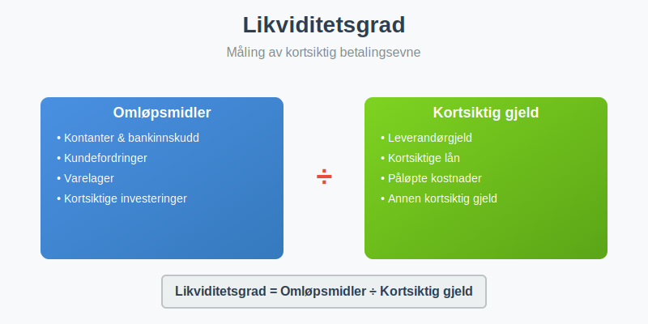
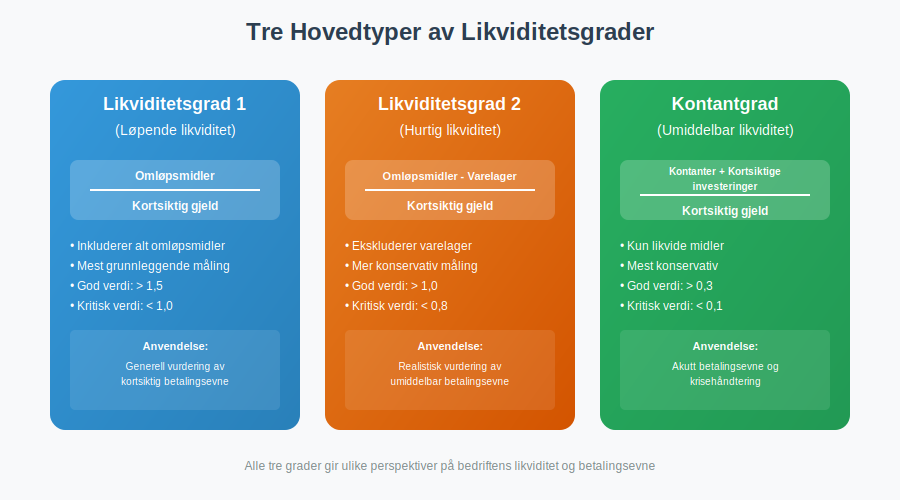
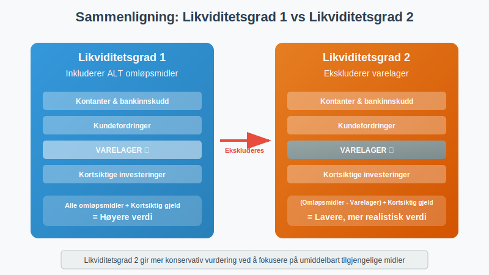
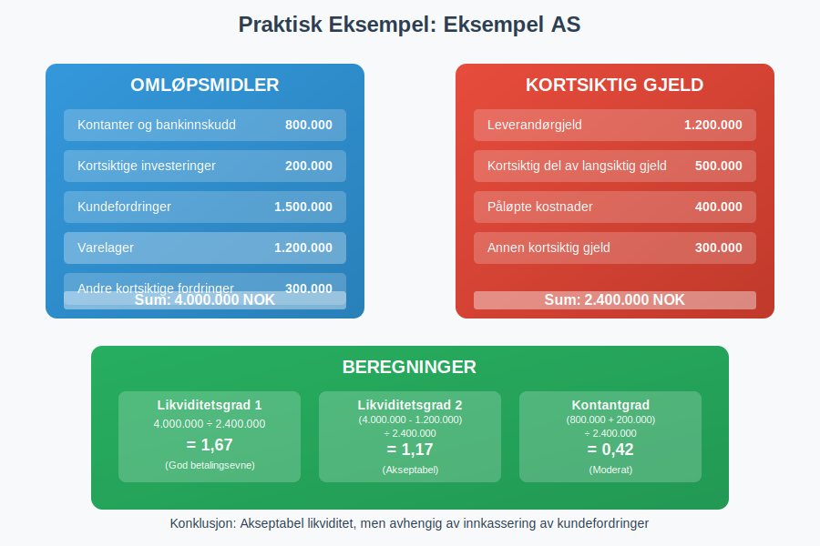
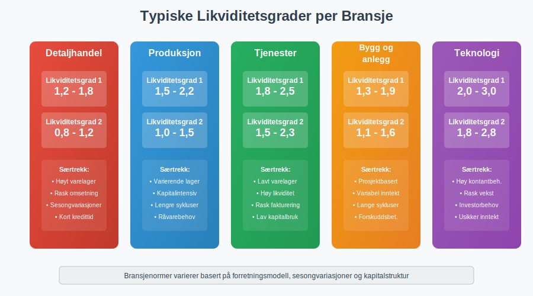
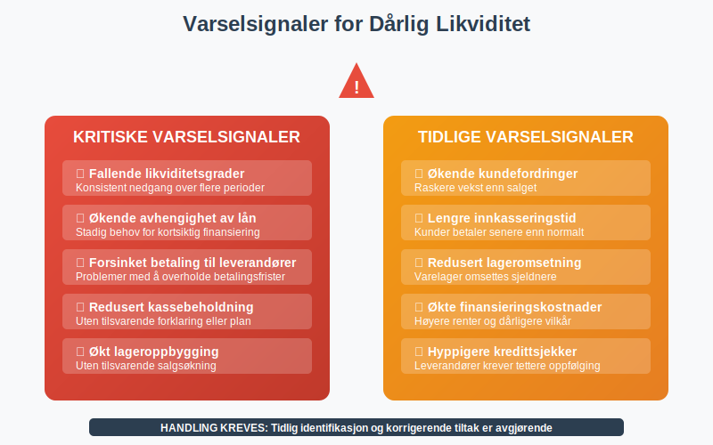
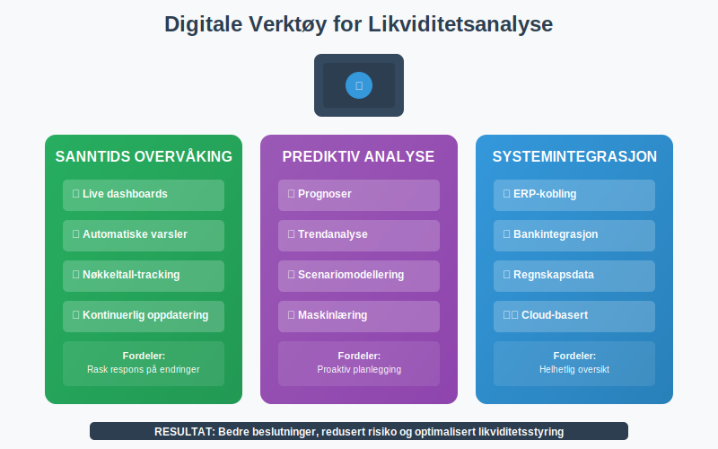

Likviditetsgrad er et sentralt finansielt nøkkeltall som måler bedriftens evne til å dekke kortsiktige forpliktelser med tilgjengelige likvide midler. Dette er et kritisk verktøy for å vurdere betalingsevne og finansiell stabilitet.

Hva er Likviditetsgrad?
Likviditetsgrad er et forholdstall som viser hvor godt en bedrift kan møte sine kortsiktige finansielle forpliktelser ved hjelp av sine mest likvide aktiva. Høyere likviditetsgrad indikerer bedre finansiell fleksibilitet og lavere risiko for betalingsproblemer.
Betydningen av Likviditetsanalyse
Likviditetsgrader er essensielle for:
- Kredittvurdering fra banker og leverandører
- Investeringsbeslutninger fra potensielle investorer
- Intern styring av arbeidskapital
- Risikohåndtering og finansiell planlegging
- Sammenligning med konkurrenter og bransjestandard
Typer Likviditetsgrader

1. Likviditetsgrad 1 (Løpende Likviditet)
Likviditetsgrad 1 er den mest grunnleggende målingen av kortsiktig betalingsevne:
Likviditetsgrad 1 = Omløpsmidler ÷ Kortsiktig gjeld
Komponenter:
- Omløpsmidler: Kassebeholdning, kundefordringer, varelager, kortsiktige investeringer
- Kortsiktig gjeld: Leverandørgjeld, kortsiktige lån, påløpte kostnader
Tolkning av Likviditetsgrad 1:
| Verdi | Vurdering | Betydning |
|---|---|---|
| Over 2,5 | Meget høy | Mulig overlikviditet, ineffektiv kapitalbruk |
| 2,0-2,5 | Høy | Meget god betalingsevne, trygg margin |
| 1,5-2,0 | God | God betalingsevne, akseptabel risiko |
| 1,2-1,5 | Akseptabel | Tilfredsstillende, men krever oppmerksomhet |
| 1,0-1,2 | Lav | Risiko for betalingsproblemer |
| Under 1,0 | Kritisk | Akutt risiko, umiddelbar handling nødvendig |
2. Likviditetsgrad 2 (Hurtig Likviditet)
Likviditetsgrad 2 gir et mer konservativt mål ved å ekskludere varelager:
Likviditetsgrad 2 = (Omløpsmidler - Varelager) ÷ Kortsiktig gjeld
Fordeler med Likviditetsgrad 2:
- Ekskluderer varelager som kan være vanskelig å selge raskt
- Fokuserer på umiddelbart tilgjengelige likvide midler
- Mer realistisk vurdering av kortsiktig betalingsevne
- Mindre påvirket av lagerverdsettelse og ukurans

Tolkning av Likviditetsgrad 2:
| Verdi | Vurdering | Anbefaling |
|---|---|---|
| Over 1,5 | Meget god | Sterk likviditetsposisjon |
| 1,0-1,5 | God | Tilfredsstillende hurtig likviditet |
| 0,8-1,0 | Akseptabel | Overvåk nøye, forbedring ønskelig |
| Under 0,8 | Svak | Krever umiddelbare tiltak |
3. Kontantgrad (Umiddelbar Likviditet)
Kontantgrad måler den mest konservative formen for likviditet:
Kontantgrad = (Kontanter + Kortsiktige investeringer) ÷ Kortsiktig gjeld
Denne graden fokuserer kun på umiddelbart tilgjengelige kontanter og høylikvide investeringer.
Praktisk Beregningseksempel
La oss analysere Eksempel AS sine likviditetsgrader:

Balansedata for Eksempel AS
| Balansepost | Beløp (NOK) |
|---|---|
| OMLØPSMIDLER | |
| Kontanter og bankinnskudd | 800.000 |
| Kortsiktige investeringer | 200.000 |
| Kundefordringer | 1.500.000 |
| Varelager | 1.200.000 |
| Andre kortsiktige fordringer | 300.000 |
| Sum omløpsmidler | 4.000.000 |
| KORTSIKTIG GJELD | |
| Leverandørgjeld | 1.200.000 |
| Kortsiktig del av langsiktig gjeld | 500.000 |
| Påløpte kostnader | 400.000 |
| Annen kortsiktig gjeld | 300.000 |
| Sum kortsiktig gjeld | 2.400.000 |
Beregninger
Likviditetsgrad 1:
4.000.000 ÷ 2.400.000 = 1,67
Likviditetsgrad 2:
(4.000.000 - 1.200.000) ÷ 2.400.000 = 1,17
Kontantgrad:
(800.000 + 200.000) ÷ 2.400.000 = 0,42
Analyse av Resultatet
| Nøkkeltall | Verdi | Vurdering | Kommentar |
|---|---|---|---|
| Likviditetsgrad 1 | 1,67 | God | Tilfredsstillende betalingsevne |
| Likviditetsgrad 2 | 1,17 | Akseptabel | Avhengig av kundefordringer |
| Kontantgrad | 0,42 | Moderat | Begrenset umiddelbar likviditet |
Konklusjon: Bedriften har akseptabel likviditet, men er avhengig av å innkassere kundefordringer og eventuelt selge varelager for å møte alle kortsiktige forpliktelser.
Bransjevariasjoner og Benchmarking

Typiske Likviditetsgrader per Bransje
| Bransje | Likviditetsgrad 1 | Likviditetsgrad 2 | Særtrekk |
|---|---|---|---|
| Detaljhandel | 1,2-1,8 | 0,8-1,2 | Høyt varelager, rask omsetning |
| Produksjon | 1,5-2,2 | 1,0-1,5 | Varierende lagerbehov |
| Tjenester | 1,8-2,5 | 1,5-2,3 | Lavt varelager, høy likviditet |
| Bygg og anlegg | 1,3-1,9 | 1,1-1,6 | Prosjektbasert, variabel |
| Teknologi | 2,0-3,0 | 1,8-2,8 | Høy kontantbeholdning |
Faktorer som Påvirker Bransjenormer
- Sesongvariasjoner i salg og innkjøp
- Kredittvilkår til kunder og fra leverandører
- Lageromsetningshastighet og lagerstrategi
- Investeringssyklus og kapitalintensitet
- Regulatoriske krav og bransjestandard
Forbedring av Likviditetsgrader
Strategier for Økt Likviditet

Kortsiktige Tiltak
- Akselerere innkassering av kundefordringer
- Optimalisere lagerrotasjon og redusere ukurans
- Forhandle bedre betalingsvilkår med leverandører
- Realisere kortsiktige investeringer ved behov
- Etablere kredittlinjer for fleksibilitet
Langsiktige Strategier
- Forbedre kontantstrøm fra drift
- Optimalisere arbeidskapital-styring
- Diversifisere inntektskilder for stabilitet
- Implementere effektive kredittrutiner
- Styrke egenkapital gjennom tilbakeholdt overskudd
Arbeidskapitalstyring
Effektiv arbeidskapitalstyring er nøkkelen til optimale likviditetsgrader:
| Komponent | Optimalisering | Effekt på likviditet |
|---|---|---|
| Kundefordringer | Kortere kredittid, bedre oppfølging | Øker likviditet |
| Varelager | Just-in-time, ABC-analyse | Frigjør kapital |
| Leverandørgjeld | Utnytte kredittperioder | Bevarer likviditet |
Risikofaktorer og Varselsignaler
Kritiske Varselsignaler

- Fallende likviditetsgrader over tid
- Økende avhengighet av kortsiktig finansiering
- Forsinket betaling til leverandører
- Redusert kassebeholdning uten forklaring
- Økt lageroppbygging uten tilsvarende salgsøkning
Konsekvenser av Dårlig Likviditet
- Betalingsproblemer og leverandørkonflikt
- Høyere finansieringskostnader og dårligere vilkår
- Redusert kredittillit og rating
- Begrenset vekstmuligheter og investeringskapasitet
- Risiko for konkurs i verste fall
Digitale Verktøy og Overvåking
Moderne Likviditetsanalyse

Automatiserte systemer kan gi:
- Sanntids likviditetsovervåking med dashboards
- Prognoser basert på historiske data og trender
- Varsler ved kritiske nivåer eller endringer
- Integrering med ERP-systemer og regnskapsdata
- Benchmarking mot bransje og konkurrenter
Implementering av Overvåkingssystem
- Definere kritiske terskelverdier for hver likviditetsgrad
- Etablere rapporteringsrutiner (daglig, ukentlig, månedlig)
- Tildele ansvar for oppfølging og tiltak
- Integrere med budsjett og kontantstrømprognose
- Regelmessig evaluering og justering av system
Sammenheng med Andre Nøkkeltall
Likviditet vs. Lønnsomhet

| Aspekt | Likviditet | Lønnsomhet |
|---|---|---|
| Tidsperspektiv | Kortsiktig | Lang- og kortsiktig |
| Fokus | Kontantstrøm | Inntjening |
| Måling | Likviditetsgrader | Marginaler, ROE, ROA |
| Risiko | Betalingsproblemer | Tap og verdifall |
Integrert Finansiell Analyse
For helhetlig vurdering kombineres likviditetsanalyse med:
- Soliditetsanalyse - langsiktig finansiell styrke
- Lønnsomhetsanalyse - evne til verdiskaping
- Aktivitetsanalyse - effektivitet i ressursbruk
- Markedsanalyse - konkurranseposisjon og vekstpotensial
Konklusjon
Likviditetsgrader er fundamentale verktøy for å vurdere bedriftens kortsiktige finansielle helse og betalingsevne. Ved å forstå og aktivt overvåke disse nøkkeltallene kan bedrifter:
- Sikre kontinuerlig drift uten betalingsproblemer
- Optimalisere arbeidskapital for maksimal effektivitet
- Bygge tillit hos investorer, kreditorer og leverandører
- Identifisere risiko tidlig og iverksette korrigerende tiltak
- Støtte strategiske beslutninger med solid finansiell analyse
Regelmessig overvåking og analyse av likviditetsgrader, kombinert med effektiv kontantstrømstyring, er essensielt for bærekraftig forretningsdrift og langsiktig suksess.